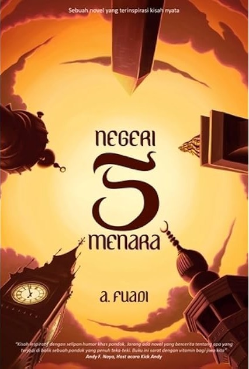

Bedah Buku: Negeri 5 Menara
Ditulis oleh: Ahmad Fuadi

Buku ini menceritakan perjalanan hidup Alif, seorang anak Minang yang menempuh pendidikan di pondok pesantren Madani...
"Man Jadda Wajada - Siapa yang bersungguh-sungguh, dia akan berhasil."
Buku ini cocok dibaca oleh remaja dan orang dewasa yang sedang mencari motivasi hidup...
Kembali ke Katalog
Bedah Buku: Tentang Kamu
Ditulis oleh: Tere Liye

Novel ini bercerita tentang Zaman Zulkarnaen, seorang pengacara muda...
"Kebaikan sejati tidak selalu terlihat, penderitaan tidak selalu berakhir dengan kehancuran, dan keadilan akan selalu menemukan jalannya, meskipun terlambat."
Tentang Kamu adalah karya yang emosional, sarat makna, dan layak dibaca semua kalangan...
Kembali ke Katalog